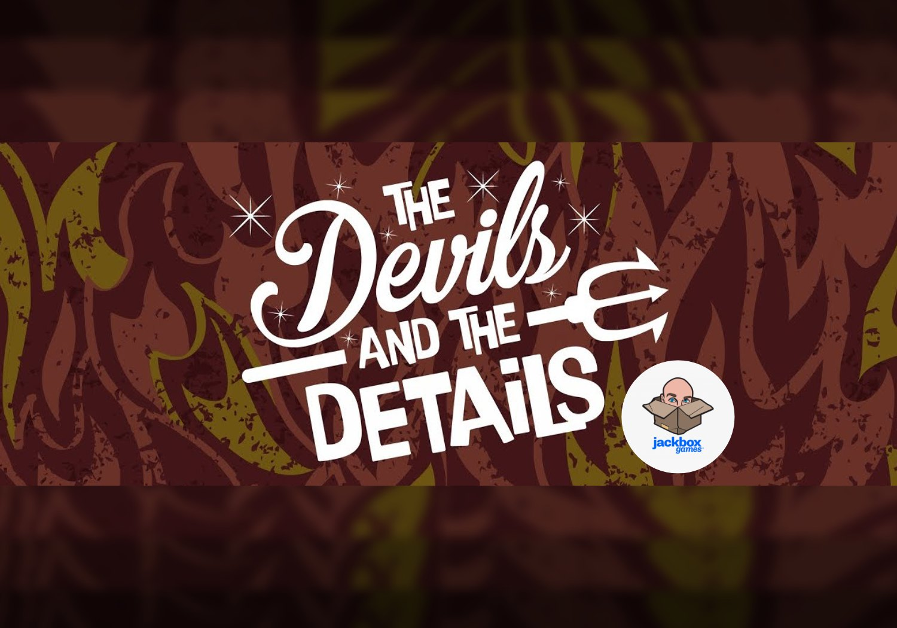
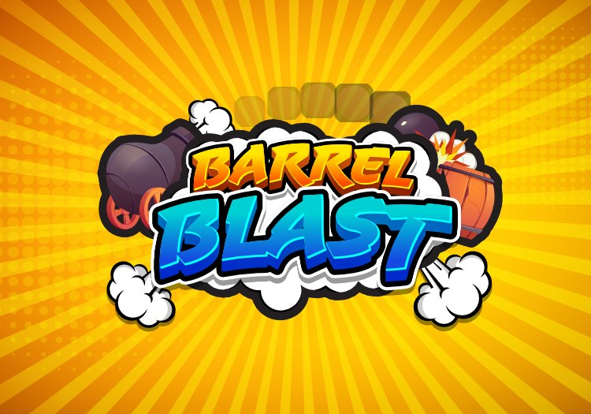
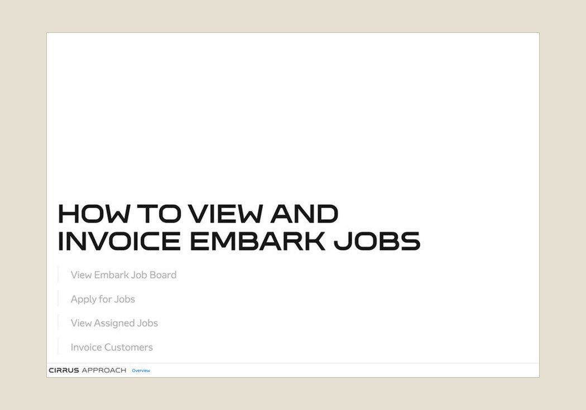
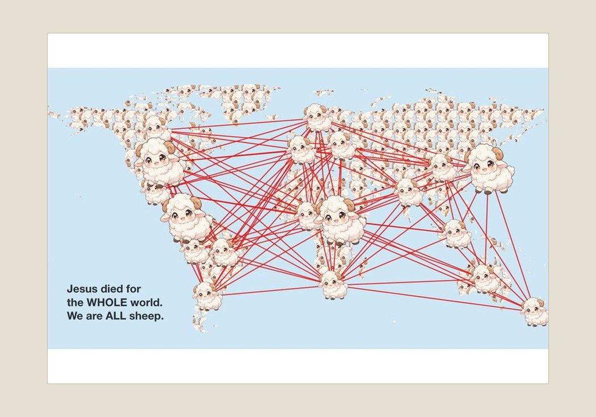

01 — Tynker
Sizzle Reels
Directing a team of international editors and artists across years of reels and lesson videos. Minecraft capture, custom vector graphics, After Effects.
Open to full-time & freelance
I'm a multimedia artist and designer in East Tennessee. Illustration, motion, 3D and game art for Jellyvision, Jackbox Games and Tynker — and now Senior Learning Experience Design at Cirrus Aircraft, where I lead AI research and development and own training from the first interview to delivery.
01 — Tynker
Directing a team of international editors and artists across years of reels and lesson videos. Minecraft capture, custom vector graphics, After Effects.

02 — Jackbox Games
Contract artist on the party game — character design, environments and interactive assets, drawn at a pace the schedule did not leave room to miss.

03 — Tynker
A hundred-plus thumbnail cards for the web and mobile app. Each one is the entry point to a lesson, so each one has to say what the lesson is before it asks for the tap.
04 — Jellyvision
A long run of illustrations for the ALEX benefits blog — turning deductibles, HSAs and open enrolment into something a person will actually stop and look at.

05 — Cirrus Aircraft
One screen recording becomes an LMS lesson and a narrated video, both carrying the same voice track. Six courses shipped this way, with an automated gate tracing every published word back to the expert who said it.

06 — Volunteer
A ten-minute interactive lesson for adult English learners — five language groups in one room, built picture-first so nobody has to read to begin.
I started in 3D in 1998, modelling characters for films that went out on national television. That taught me to think in space before I think in layers — and it is still how I plan a frame, a lesson or a page.
The last two years I have spent teaching generative tooling to carry an idea from first concept to finished product without losing the hand that made it. That is what I do at Cirrus now, and it is the part I would bring to your team first.

Vector illustration, logos and identity, layout and brand systems. Illustrator, Photoshop, Affinity, Figma.
After Effects, Animate, Premiere, Spine rigging, storyboards and explainer video. Thirty years of 3D behind all of it.
Subject-matter interviews through storyboard, build and SCORM delivery — plus the generative workflows that make the pace possible.
“Jellyvision was the very lucky home for Yoshi's artistic excellence for almost nine years. He knows how to handle high volume, high pressure project work as well as iterative product work — two different mindsets.”
“Someone who reliably brought clever ideas to the table, and nailed the landing when it came to execution, often on his first stab at it. Can't recommend him enough.”
“He was always on the forefront of figuring out how to adapt our art for the constantly-evolving web landscape, and how to streamline the process of creating it.”
Hiring, commissioning, or just working out whether I'm the right fit — write to me directly and you'll get a person, not a funnel.
yoshi.sakaguchi@gmail.com